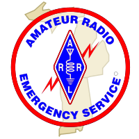

Indiana-Michigan Digital Test
After-Action Report
Functional Drill
Edition 1

Legal Notice
Copyright© 2011, Indiana and Michigan Sections of the American Radio Relay League
This document is distributed for official use only. Refer to the handling instructions in the preface before sharing this document in any way.
The ARRL Diamond and logo, the ARES logo and the ARPSC logo are registered trademarks of the American Radio Relay League in the United States and other countries.
All other trademarks are the property of their respective owners.
Abstract
On 2011-04-09 Indiana and Michigan Sections held a Functional Drill using the scenario of an Earthquake. This document details the result of that Functional Drill.
Chapter 1. Executive Summary
The Indiana and Michigan Sections Earthquake Functional Drill "Indiana-Michigan Digital Test" was developed to test Indiana and Michigan Sections' ComC 3.4, ComC 5.2 and ComC 5.4.
The exercise planning team was composed of numerous and diverse agencies, including Indiana and Michigan ARES, Army and Navy MARS, Indiana Department of Homeland Security, the Michigan State Police Homeland Security and Emergency Management Division, and Indiana and Michigan NTS. The exercise planning team discussed modes to be used, communications relays anticipated, and formatting messages for transmission. In the course of discussing the exercise, it was discovered that the traffic which would likely be transmitted between SEOCs was quite different than the types of traffic practiced daily.
Based on the exercise planning team's deliberations, the following objectives were developed for Indiana-Michigan Digital Test:
Objective 1: Organize a relatively complex drill across jurisdictions
Objective 2: Transmit an EMAC ReqA request from the Indiana SEOC to the Michigan SEOC, formulate a response (ReqA Part II) in Michigan and return it to the Indiana SEOC the Michigan SEOC
The purpose of this report is to analyze exercise results, identify strengths to be maintained and built upon, identify potential areas for further improvement, and support development of corrective actions.
The April 9 drill was intended to be a dry run for a more complete test during the New Madrid National Level Exercise (New Madrid Aftermath in Michigan), but real-world issues prevented the planned May 17 test from taking place.
The major strengths identified during this exercise are as follows:
The six agencies, two governmental and four volunteer, were able to work together effectively.
Creative solutions were developed by multiple parties when faced with unforseen difficulties.
In spite of significant, unanticipated issues, the messages were able to be delivered, although the mechanisms were not what had been intended.
1.2. Primary areas for improvement
Throughout the exercise, several opportunities for improvement in amateur radio's ability to respond to the incident were identified. The primary areas for improvement, including recommendations, are as follows:
The transmission modes selected turned out to be less than ideal for the traffic to be passed. Experimentation with other modes to outline the limitations should follow this test.
Inconsistency between various "hubs" added unforseen complexity to Pactor operations when faced with challenging conditions. Either other, more straightforward, modes should be selected for emergency communications, or better training and/or documentation provided.
Only a single type of document was tested. The jurisdictions, and probably other nearby jurisdictions, should develop procedures applicable to a wide range of messages of the type expected in the event of an incident.
Chapter 3. Exercise Design
3.1. Exercise Purpose and Design
FEMA planned a "National Level Exercise" around a large earthquake event in the central United States. The Sections had conducted a number of small drills with neighboring states, but the planned NLE presented a realistic scenario in which amateur radio might be required to provide communications between State EOCs.
In discussions with the Indiana Department of Homeland Security it was determined that a probable SEOC to SEOC message would be an Emergency Management Assistance Compact (EMAC) request, prepared on a form called a "Req-A". This form is quite long, and unlike the kinds of traffic practiced regularly by the National Traffic System (NTS).
The longer message would better be handled by digital means. The National Traffic System maintains a digital infrastructure, NTSD, which transmits messages using an email-like protocol over radio. It was decided to use this mechanism, even though NTSD-capable stations are small in number. Since MARS maintains a similar infrastructure, a decision was made to attempt the same traffic over both NTSD and MARS circuits.
Although MARS participated in the exercise, this document focuses on ARPSC results. MARS processes and structure is somewhat different, as are the available modes and frequencies. It is expected that MARS will also produce an after action report based around their organization and processes.
3.2. Exercise Objectives, Capabilities, and Activities
Capabilities-based planning allows for exercise planning teams to develop exercise objectives and observe exercise outcomes through a framework of specific action items that were derived from the Target Capabilities List (TCL). The capabilities listed below form the foundation for the organization of all objectives and observations in this exercise. Additionally, each capability is linked to several corresponding activities and tasks to provide additional detail.
Based upon the identified exercise objectives below, the exercise planning team has decided to demonstrate the following capabilities during this exercise:
Objective 1: Organize a relatively complex drill across jurisdictions
Capability 1 Title: ComC 5.4 - Coordinate communications policy and procedure across response entities
Activity 1.1 Initiate contact between sections
Activity 1.2 Agree on outline of exercise
Activity 1.3 Recruit necessary resources
Activity 1.4 Recruit liaisons with government organizations
Activity 1.5 Develop exercise plan
Activity 1.6 Develop communications protocols
Activity 1.7 Execute exercise
Objective 2: Transmit an EMAC ReqA request from the Indiana SEOC to the Michigan SEOC, formulate a response (ReqA Part II) in Michigan and return it to the Indiana SEOC
Capability 2 Title: ComC 3.4 - Request external resources using EMAC and other mutual aid/assistance processes (inter- and intra-State)
Activity 2.1 Execute Req-A Part I (IN DHS)
Activity 2.2 Convert Req-A for transmission (IN ARES)
Activity 2.3 Convert transmitted Req-A back to form (MI ARES)
Activity 2.4 Execute Req-A Part II (MSP EMHSD)
Activity 2.5 Convert Req-A Part II for transmission (MI ARES)
Activity 2.6 Convert transmitted Part II back to form (IN ARES)
Capability 3 Title: ComC 5.2 - Establish and ensure connectivity with EOC/MACC
A severe earthquake strikes Memphis with strong aftershocks in the Wabash Valley. Most infrastructure, including virtually all communications infrastructure, has been destroyed for some distance from the epicenter. States in the CUSEC group, including Indiana, require assistance.
Chapter 4. Analysis of Capabilities
This section of the report reviews the performance of the exercised capabilities, activities, and tasks. In this section, observations are organized by capability and associated activities. The capabilities linked to the exercise objectives of Indiana-Michigan Digital Test are listed below, followed by corresponding activities. Each activity is followed by related observations, which include references, analysis, and recommendations.
Capability Summary: ComC 5.4 - Coordinate communications policy and procedure across response entities
Initiate contact between sections
4.1.1.1. Observation 1.1.1
Area for Improvement - No forum for regional SECs
When initially setting up this exercise, the SEC for Michigan (the initiator) had no forum of regional SECs to contact. Rather than knowing which other jurisdictions would be interested in running this test, it was necessary to make cold calls to nearby SECs in an attempt to find a partner.
In addition, had there been a forum where regional SECs discussed issues, the design of the exercise likely would have been different, having been able to draw from the experiences of other Sections.
4.1.1.1.3. Recommendations
4.1.1.2. Observation 1.1.2
Strength - Contact information generally available
Although there is no definitive list of contact information for the SECs, there are a large number of sources. The ARRL website presumably has the necessary information, but many SECs have no data there or the data are incorrect or out of date. However, amateur radio callsigns for all SECs is available, and with a little research, that is generally enough to reveal some contact information.
This research can take some time, though, which could be a problem in the event of an actual incident.
4.1.1.2.3. Recommendations
Agree on outline of exercise
4.1.2.1. Observation 1.2.1
Strength - SECs generally see same needs
Each Section is quite different, and has different needs. Nevertheless, many of the needs are similar and within the context of a relatively limited exercise such as this, it was not difficult to agree on an overall outline.
4.1.2.1.3. Recommendations
Recruit necessary resources
4.1.3.1. Observation 1.3.1
Area for Improvement - Differing relationships in sections complicate process
The relationships between ARES, RACES and NTS are quite different between the Sections. That initially caused some confusion in trying to identify resources required to perform the exercise.
4.1.3.1.3. Recommendations
4.1.3.2. Observation 1.3.2
Area for Improvement - Selection of protocol limits available resources
The intent was to test Pactor communications which, in principle, should be relatively straightforward. However, there are few individuals with any sort of digital capability, and fewer still with the knowledge and equipment to effectively use Pactor.
4.1.3.2.3. Recommendations
Recruit liaisons with government organizations
4.1.4.1. Observation 1.4.1
Strength - States willing to get engaged
Initially the involvement of the government entities was not expected. However, both the Indiana Department of Homeland Security and the Michigan State Police Emergency Management and Homeland Security Division joined in the planning an execution. This added considerably to the value of the exercise.
4.1.4.1.3. Recommendations
Develop exercise plan
4.1.5.1. Observation 1.5.1
Area for Improvement - Few resources trained in HSEEP
Development of the exercise was handled via web based meetings. Most of the participants had little or no training in the development of exercises, so discussions tended to go off track and drag on.
4.1.5.1.3. Recommendations
Develop communications protocols
4.1.6.1. Observation 1.6.1
Area for Improvement - Unfamiliar message caused difficulties
The Req-A selected as a test was quite different than the short messages practiced daily by NTS. In addition, the form had much detail that did not need to be transmitted, so considerable effort was expended determining how best to transmit the message.
There was probably an initial perception that forms of this sort could simply be attached to a Pactor message. Certainly, the technical capability exists, however, Pactor over HF is sufficiently slow that any realistic attachment is simply impractical.
Because the initial scope was "digital", a digital approach was envisioned, and the NTS-style rigor was expected, so methods centered on "flattening" the message to straight text. In hindsight, it may well have been more effective to simply read the form over HF phone.
4.1.6.1.3. Recommendations
4.1.6.2. Observation 1.6.2
Area for Improvement - Solutions highly specific - more general approaches needed
The primary focus was on the EMAC Req-A form. The Action Request Form (ARF) was also considered. However, there could be a wide range of other message types, and the narrow focus meant that those other types were not considered.
4.1.6.2.3. Recommendations
Execute exercise
4.1.7.1. Observation 1.7.1
Area for Improvement - Scheduling was fluid
Last-minute changes were made to the scheduling of the test, which caused some degree of confusion.
4.1.7.1.3. Recommendations
4.1.7.2. Observation 1.7.2
Area for Improvement - Not all expected resources were available
Partly because of the high level of skill required, limiting the number of possible participants, and partly because of last minute changes, not all of the expected players were able to participate.
4.1.7.2.3. Recommendations
Capability Summary: ComC 3.4 - Request external resources using EMAC and other mutual aid/assistance processes (inter- and intra-State)
Execute Req-A Part I (IN DHS)
4.2.1.1. Observation 2.1.1
Strength - This was a familiar process to DHS
The Indiana Department of Homeland Security had been working through the EMAC process in preparation for the National Level Exercise, so actually executing the Req-A was somewhat rote.
4.2.1.1.3. Recommendations
Convert Req-A for transmission (IN ARES)
4.2.2.1. Observation 2.2.1
Area for Improvement - Time consuming and error-prone conversion
It was reported by players at the Indiana SEOC that the process of converting the Req-A form to plain text was time-consuming and error prone.
4.2.2.1.3. Recommendations
4.2.2.2. Observation 2.2.2
Area for Improvement - Conversion Req-A specific, there will be other forms
Methods used to convert the form for transmission were specific to the Req-A. As mentioned earlier, there are a number of other forms and messages that might be transmitted, and it is not at all clear that the same techniques would apply.
4.2.2.2.3. Recommendations
Convert transmitted Req-A back to form (MI ARES)
4.2.3.1. Observation 2.3.1
Strength - Executed without issue
The Michigan SEOC reported no difficulty in taking the transmitted text and converting it back to the form. The operator simply read the fields to the MSP representative who entered the data into the form as it was received.
4.2.3.1.3. Recommendations
Execute Req-A Part II (MSP EMHSD)
4.2.4.1. Observation 2.4.1
Strength - EMHSD very concerned about appropriate response
Although amateurs were not very concerned about the content of the message, only its accurate transmission, MSP wanted to be sure that whatever left the Michigan SEOC was realistic. This added to the realism and effectiveness of the exercise.
4.2.4.1.3. Recommendations
4.2.4.2. Observation 2.4.2
Strength - EMHSD had prepared responses (mission packages)
In preparation for play during the NLE, Michigan had prepared Req-A responses ahead of time. The actual generation of a response to a Req-A is a rather complex, time-consuming process. By having responses prepared for likely requests ahead of time, which EMHSD called "mission packages", MSP was in a position to respond more quickly.
4.2.4.2.3. Recommendations
Convert Req-A Part II for transmission (MI ARES)
4.2.5.1. Observation 2.5.1
Strength - Little problem but done on the fly
Operators at the Michigan SEOC reported no difficulty in preparing the response for transmission.
4.2.5.1.3. Recommendations
Convert transmitted Part II back to form (IN ARES)
4.2.6.1. Observation 2.6.1
Area for Improvement - No feedback, cycle took too long
Due to the propagation difficulties and the length of time taken for the transmissions, the response to Indiana arrived after play was complete.
4.2.6.1.3. Recommendations
Capability Summary: ComC 5.2 - Establish and ensure connectivity with EOC/MACC
Transmit message SEOC to SEOC
4.3.1.1. Observation 3.1.1
Area for Improvement - Conditions prevented IN SEOC from reaching hub
The Indiana SEOC had intended to deliver the message to a nearby NTSD hub (WB9FHP). However, conditions on 80 meters did not permit reaching WB9FHP during the exercise, and the hub does not switch to 40 except in the evening.
4.3.1.1.3. Recommendations
4.3.1.2. Observation 3.1.2
Area for Improvement - Lack of familiarity with NTSD eliminated alternate hub as an option
It is quite likely that Indiana could have delivered the message to W8UL. however, W8UL has a rather complex frequency scanning schedule, and operators at the Indiana SEOC were not famiiar with that schedule.
4.3.1.2.3. Recommendations
4.3.1.3. Observation 3.1.3
Area for Improvement - Deep knowledge of NTSD allowed message to be retrieved
The WB9FHP hub has some specialized capabilities, and the message was eventually delivered there, but through a different mechanism than expected. The message was successfully retrieved from WB9FHP by WB9JSR. However, a slightly different mechanism was required. This was only possible because WB9JSR had the knowledge and experience to recognize what was needed. Most other operators would not have been successful.
4.3.1.3.3. Recommendations
4.3.1.4. Observation 3.1.4
Area for Improvement - Olivia path from JSR to MTL very slow
The message was transmitted from WB9JSR to KD8MTL via Olivia. This proved to be quite slow, and required a number of fills.
4.3.1.4.3. Recommendations
4.3.1.5. Observation 3.1.5
Area for Improvement - Choice of "digital" limited options we may have chosen (40 phone)
Because the exercise was framed as a digital exercise, only digital modes were used. In a real-world situation, a direct HF phone or CW circuit between the SEOCs would likely have been established. Operators were reluctant to "break the rules" and select a more straightforward approach.
4.3.1.5.3. Recommendations
The EMAC request was successfully transmitted from the Indiana SEOC to the Michigan SEOC, a response created, and transmitted back to the Indiana SEOC. Although the traffic was able to make the trip, a number of challenges were encountered:
The intention was to use NTSD for as much of the trip as possible, although Michigan's SEOC was not equipped for Pactor necessitating a different mode for the final leg. There are a large number of challenges which may make NTSD in particular, and perhaps even Pactor in general, a poor choice.
Some of the paths selected depended on "typical" propagation conditions. Conditions are rarely typical and alternatives must be available and documented ahead of time.
The use of digital modes, and especially Pactor, requires skilled operators which are small in number. It might make more sense to use more traditional modes, even if other modes might seem better at first glance.
Going forward, much work should be done:
The range of documents that might need to be moved between states should be identified, and differences understood.
Procedures for handling those documents between the states should be developed, tested, and agreed upon.
Additional states in the region should be engaged in the discussion. This exercise uncovered differences between Indiana and Michigan; there is no reason to suspect that there aren't greater differences to be dealt with as additional states are engaged.
Overall, this exercise uncovered a number of areas where improvement is needed, and thus was extremely worthwhile. The Indiana and Michigan Sections would especially like to thank the Indiana Department of Homeland Security, and the Michigan State Police, Emergency Management and Homeland Security Division for their assistance. Without them the exercise may well have overlooked some important components.
This IP has been developed specifically for Indiana and Michigan Sections as a result of Indiana-Michigan Digital Test conducted on 2011-04-09. These recommendations draw on both the After Action Report and the After Action Conference. [The IP should include the key recommendations and corrective actions identified in Chapter 3: Analysis of Capabilities, the After Action Conference, and the EEGs. The IP has been formatted to align with the Corrective Action Program System.]
|
Capability
|
Observation Title
|
Recommendation
|
Corrective Action Description
|
Capability Element
|
Primary Responsible Agency
|
Agency POC
|
Start Date
|
Completion Date
|
|---|
|
[Capability 1: Capability Name]
|
1. Observation 1
|
1.1 Insert Recommendation 1
|
1.1.1 Insert Corrective Action 1
|
Planning
|
State X EMA
|
EMA Director
|
Dec 1, 2006
|
Sep 1, 2007
|
|
1.1.2 Insert Corrective Action 2
|
Planning
|
State X EMA
|
EMA Systems Director
|
Dec 1, 2006
|
Sep 1, 2007
|
|
2. Observation 2
|
2.1 Insert Recommendation 1
|
2.1.1 Insert Corrective Action 1
|
Training
|
State X EMA
|
EMA Director
|
Dec 1, 2006
|
Sep 1, 2007
|
|
2.1.2 Insert Corrective Action 2
|
Systems and Equipment
|
State X EMA
|
EMA Director
|
Dec 1, 2006
|
Sep 1, 2007
|
Table A.1. Improvement Plan Matrix